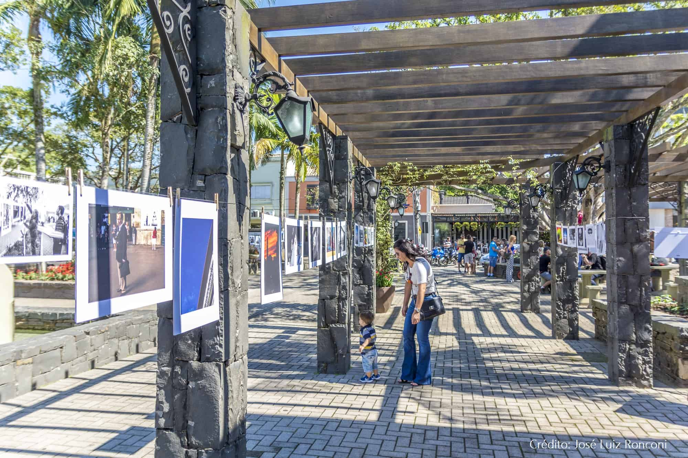

Ponte dei Morosi
Ponte Dei Morosi é uma passarela, que no dialeto vêneto significa Ponte dos Namorados,
é uma alusão à primeira ponte de madeira construída em 1936. A romântica ponte foi ponto
de encontro de várias gerações, testemunhado pelos jovens da época.
Praça Humberto Bertoluzzi

A charmosa praça atrai turistas e moradores que encontram no espaço,
inspirado nas pequenas praças italianas com flores e arandelas, um local
para passar o tempo, assistir a apresentações no coreto, jogar mora
(típico jogo da cultura italiana) e também para aproveitar os restaurantes
que existem no entorno.
Gôndola Lucille
A Gôndola de Nova Veneza chegou em 2006 e foi um presente do Governo Vêneto
como forma de aproximar os laços entre Veneza, na Itália, e Nova Veneza, no Brasil.
Existem apenas quatro gôndolas doadas oficialmente pelo governo de Veneza,
na Itália: uma em Toronto, no Canadá; outra em São Petersburgo, na Rússia;
a terceira em Pequim, na China; e a quarta em Nova Veneza, Santa Catarina,
Brasil, que completou 10 anos em solo brasileiro em 2016 e foi um dos motivos
pelos crescimento do turismo no município. A gôndola, de nome Lucille, chegou
em 2006. Foi utilizada nos canais de Veneza antes de ser doada e é 100% artesanal,
fabricada por um canteiro que tem mais de 700 anos e simboliza uma aproximação entre
as cidades.